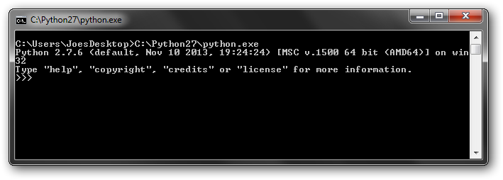
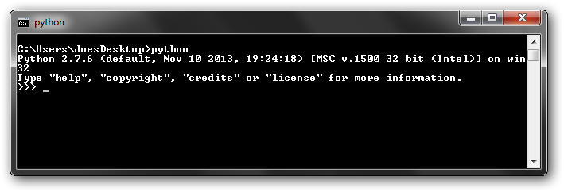

Python installation is pretty straightforward. For Windows, just go to the download page
and install the proper executable. On Linux you will already have python. At this point
you can head over to Learning Python or Setting up an
IDE
But there are a common question that come up, you can check these out as they pertain to
you
- Multiple Python Installations
- Running Python
- The 'python' command
- Does not create 'python' command
- Manual Setup
- By default, creates/updates file extension associations
- Option can be deselected
- User can pick installation directory
- Default is C:/python## for Python #.#.x
- Linux should already have a version on Python, version will vary depending on
distribution
- Does creates/overwrite 'python' command
- Also creates/overwrite 'python#' and 'python#.#' version specific commands
- Overwriting 'python' command, causing it to refer to a different version, could cause
issues
- Change any of the above with custom build options
- From an IDE (after interpreter configuration)
- By double-clicking .py files in a browser
> File extension association must be setup
> If the script doesn't require arguments
- From the command line, either by:
> explicitly referencing to the python executable
> using the 'python' command (if it is setup)
- In general, anything that can be done from command line
can also be done by:
> shell/batch scripts
> system calls (which most scriptable softwares can generate)
I use Windows terminology but this paragraph also applies Linux. OS specific info in later paragraphs.
Python can always be launched by entering the explicit path into a command prompt
- To launch a comment prompt (Windows): Windows Key + R -> type 'cmd' >
{enter}
- Type the location of python.exe into the terminal, e.g.
C:\Python27\python.exe
- When called without any argument you get the Python terminal

- To run a script, add the script name as the first argument, e.g.
C:\Python27\python.exe hello.py
The script will run then return to the propmt when complete
More common (and convenient) way to simply be able to type 'python' or other 'command'. This works when the python executable, or some type of link to it, is in one of the directories listed in the PATH environment variable.
The most common recommendation is to modify PATH to include the python directory. Since the python.exe is always named the same, this can only work for a single installation, which proably ins't a big deal for most people. You do have to do it manually. A Windows Python installation only 'overwrites' if the same directory is specified, as would be that case if you installed a 2nd 2.7.x installation and used the default.
By default, a windows installation will setup file path association, allowing you to double-click python scripts. This method isn't useful if the script requires arguments.
For multiple installations, you will want make a symlink with unique name somewhere in a
PATH like C:/WINDOWS. To do this open command windows
as an administrator then use mklink with the /h switch
to make a hardlink. Below I make a uniquely named hardlink, 'joes_py27', to my
C:\Python27 python executable.
cd c:/windows mklink /h joes_py27.exe "C:/Python27/python.exe"
On Linux, links are created in a PATH folder automatically during python installation. Linux distros include a python installation, and overwriting the link with one pointing to a different version could cause issues. To prevent this, you should build python using the altinstall command. You can also control the install directory using build options.
1) Download/uncompress the "compressed source tar ball" for the appropriate version from
Python.org
2) CD into the uncompressed directory and build it with the following commands:
make clean ./configure --prefix=/apps/joes_py27 --exec-prefix=/apps/joes_py27 make altinstall preifx=/apps/joes_py27 exec-prefix=/apps/joes_py27
Maybe options aren't needed in both places, but this worked for me on RHEL 6.4.
References/More info:
How
to install locally python on linux home directory?
[Tutor] how to
install python on unix machine if you don't have root
3a) [Optional] If you want a terminal command use the ln command to make a link somewhere in PATH, like
/usr/local/bin
ln /s /apps/joes_py27/bin/python2.7 /usr/local/bin/joes_python
3b) [Optional] Alternatively, you can get similar behaviour behaviour by using an
alias. This shouldn't require
admin rights.